1 · Host: textbook giant SOC, and two infrastructure traps
Relaxed geometry $a=3.320$ Å, $z_{\rm Se}=\pm0.070c$ (75 Ry, SG15-SR); host cell carries the 4-species ghost table (W, Se, O, S — all FR) so the defect pseudopotential tables are loaded for EDI. NSCF 144 $k$ × 180 spinor bands:
| direct gap at K | 1.2724 eV | Kramers at TRIMs / TRS over the grid | 0.0000 meV exact |
| K-valley VB splitting | 465.6 meV (3.1× MoS$_2$) | K-valley CB splitting | 38.4 meV ($\approx1.5\,k_BT$ at 300 K) |
| Q valley above K | +49 meV (thermally reachable) | band layout | W5s / W5p / W4f (2.2 eV $j$-split) / Se4s / VB 27–40 / CB 41–48 |
The 22-band active window (27–48) is not isolated on the conduction side (unlike MoS$_2$), but the square 22-WF Wannier gauge (user's choice, MoS$_2$-consistent) works cleanly: $\Omega_D=0.12$ Å$^2$ only, $H(R)$ decay $6.9\times10^{-5}$, grid reproduction 0.04 meV — the band-crossing ringing lives outside the $\pm$0.45 eV observation windows. Two traps worth recording: (i) SG15 FR-1.0 UPFs ship index="*" Fortran overflows (W×5, Se×1 — repaired from the block tags); (ii) a truncated cell vector ($a_{2y}=2.8752$ vs the exact $\sqrt3 a/2=2.87520434$) splits wannier90's coordination shells by $2\times10^{-6}$ and kills the automatic b-vector search — keep the QE-consistent cell and set kmesh_tol = 1e-4.
2 · Defect verdicts: golden, converging, and basis-limited
Same machinery as MoS$_2$+SOC (spinor supercells → extraction → edi_v7a.x vertex, band_ed 1–162 → $H_{\rm eff}$ vs deep-state-aligned supercell truth). All levels Kramers-paired; vertex Hermiticity bitwise zero.
| defect | supercell truth ($E-E_{\rm VBM}$, eV) | $H_{\rm eff}$ verdict |
|---|---|---|
| S$_{\rm Se}$ | gap empty; CB-edge states at CBM$+3$ meV | golden: 0 in-gap (= truth), edges to 4 meV |
| V$_{\rm Se}$ | $a_1$ at $-0.011$ (pinned at the VBM); $e$ pair 0.772 / 0.935, SOC splitting 163 meV (3.4× the V$_S$@MoS$_2$ 47.6) | 162b: pair 0.945/1.018, split 73; 280-band boost: 0.813/0.961, split 148 — monotonic Ritz descent with the splitting opening toward the truth; residuals +41/+26 meV. A third shallow pair (1.14, descending) has no 6×6 counterpart → concentration-sensitive bound state (hybridized into the CB at 6×6, bound in the dilute limit). |
| O$_{\rm Se}$ | gap essentially empty; shallow trap pair at CBM$-32$/$-37$ meV (the O family flips from MoS$_2$'s above-edge resonance to an in-gap trap) | basis-limited at 75 Ry: the CB-derived localized trio is still $\sim$300 meV from its truth homes at 280 bands and descending too slowly for band-boosting to pay — the compact O orbitals + W-$d$ local ring need a harder basis (100 Ry arm pending). Edge/transport-window physics is unaffected (see §4 gates). |
2.1 Supercell band structures: the DFT answer drawn along the zone
Direct 6×6 supercell band structures along the supercell-BZ path $\Gamma$–M–K–$\Gamma$ (12 points, 1500 spinor bands per $k$, deep-state aligned to the pristine cell at $\Gamma$; the primitive K folds onto the supercell $\Gamma$, so both band edges live at zone center). Pristine bands in gray, defect cell in blue, in-gap defect bands highlighted.
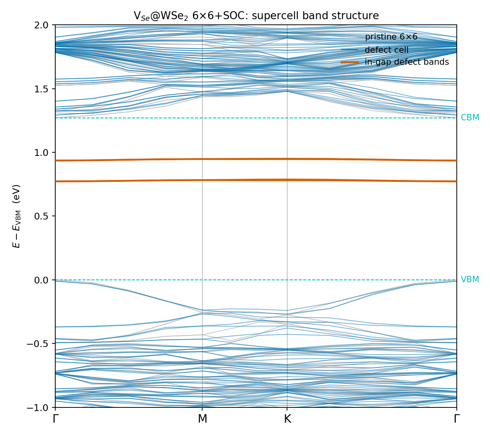
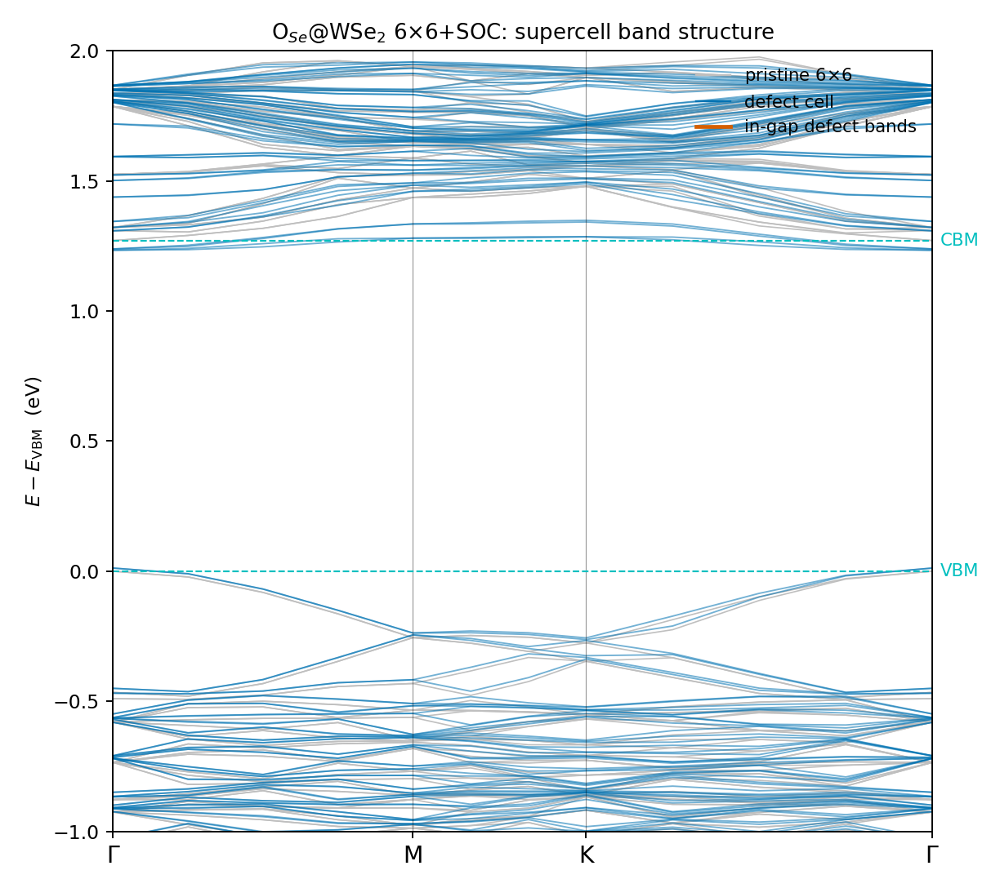
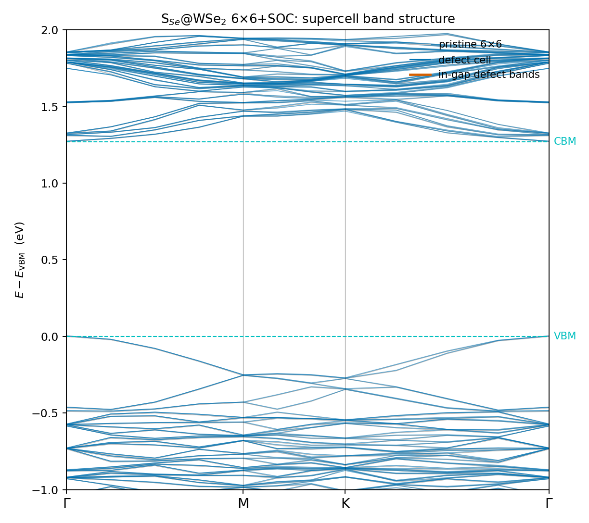
Alignment shifts ($+38.2/+4.4/+11.0$ meV for O$_{\rm Se}$/V$_{\rm Se}$/S$_{\rm Se}$) reproduce the $\Gamma$-spectrum extractions of §2 exactly — a closed consistency loop between the two readouts.
The V$_{\rm Se}$ diagnosis chain is a template: eigenvector fingerprints (IPR$_k\sim1/144$ = real-space localized, CB-derived, $\tilde\chi$-weight $\sim$0.002), bitwise Hermiticity, then the band-count scan on the same vertex binary (zero new EDI) separating variational descent from data corruption — monotonic in both materials, decelerating only where converged.
3 · Spectral functions: the full matrix
All three defects mapped three ways: the full panorama ($-1\ldots2$ eV, $\eta=20$ meV, $\Delta\omega=4$ meV) and scalar-grade zooms at both band edges ($\eta=5$ meV, $\Delta\omega=0.25$ meV, 721 path points, $\omega_0$ pinned to the carrier-side edge). Positions of the deep V$_{\rm Se}$/O$_{\rm Se}$ in-gap lines carry the 162-band + static-pin rendering (quote structure from the maps, numbers from the §2 verdicts); everything at the band edges is quantitative.
3.1 Panoramas
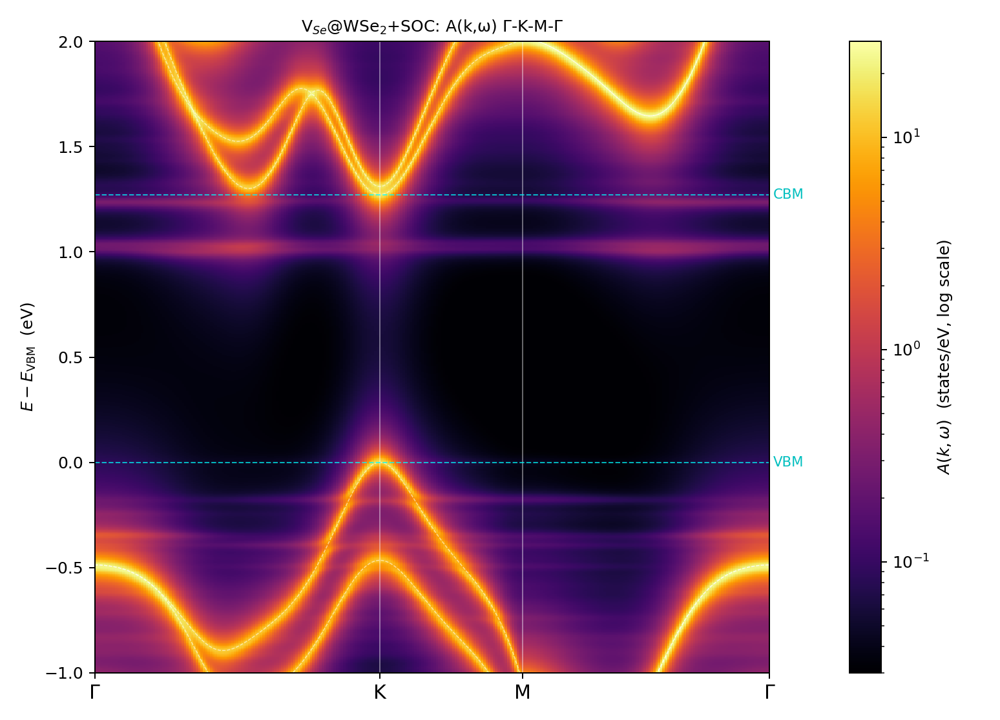
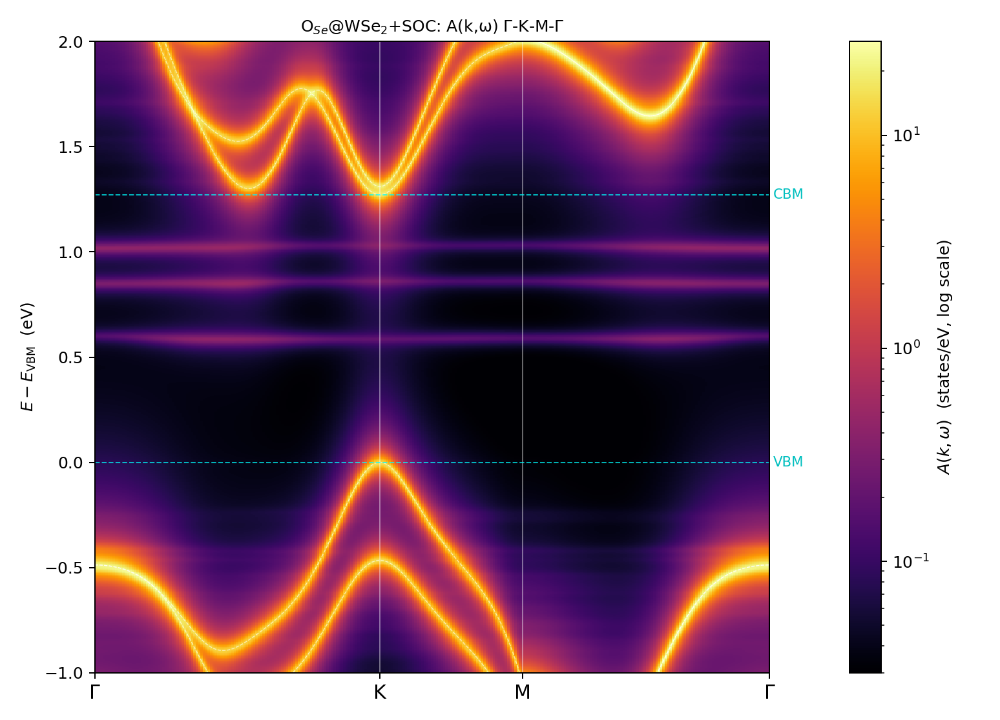
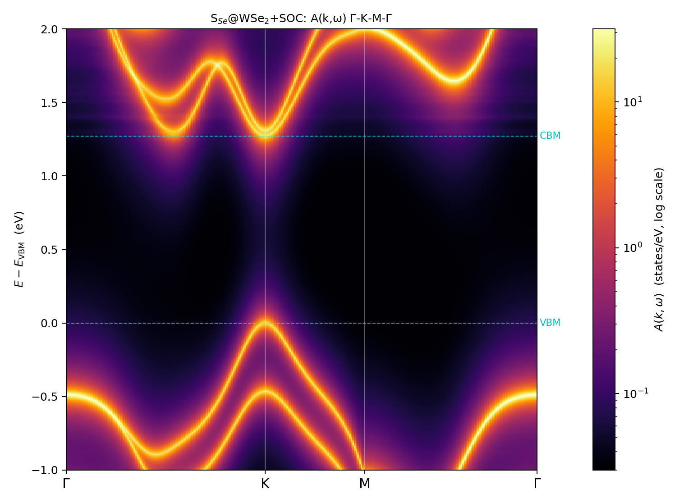
3.2 V$_{\rm Se}$ in-gap zoom
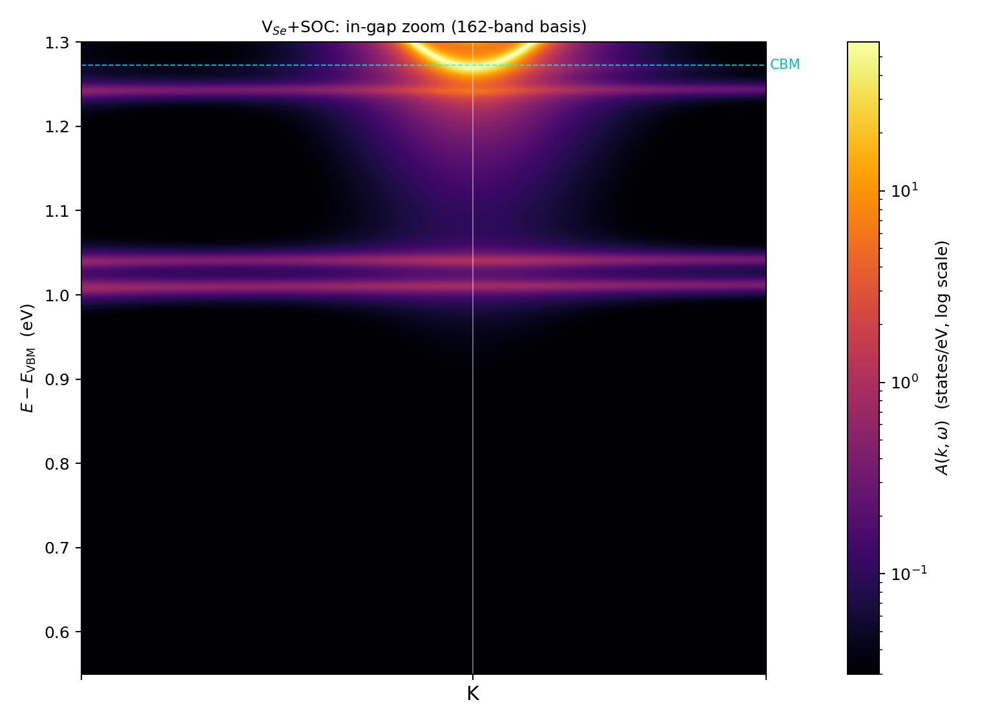
3.3 VBM-edge triptych: the hole-mobility ledger
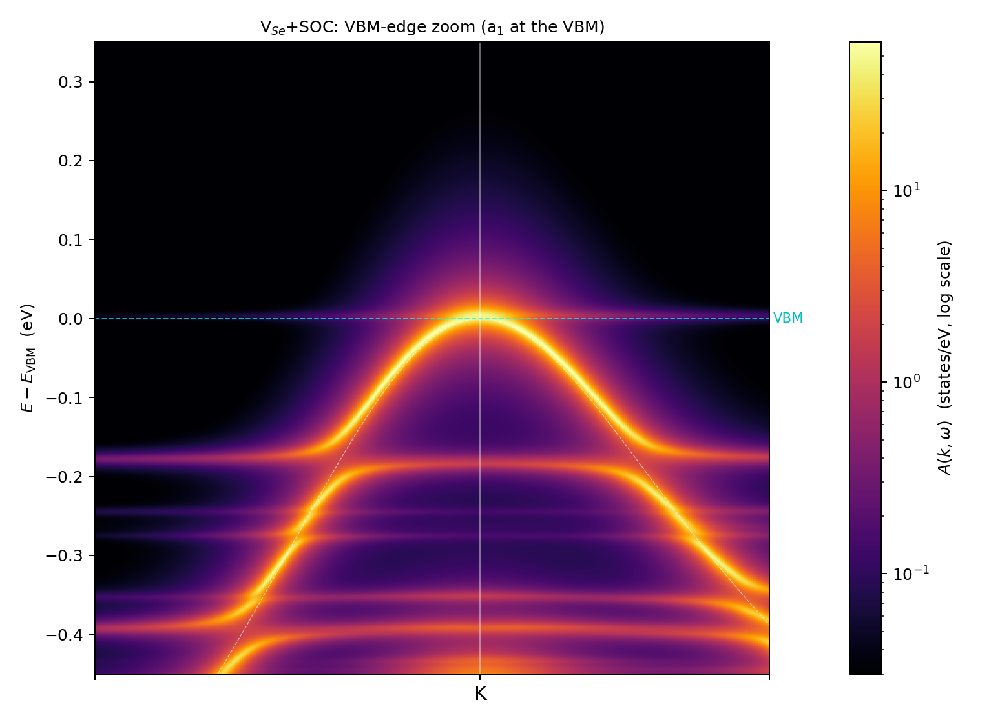
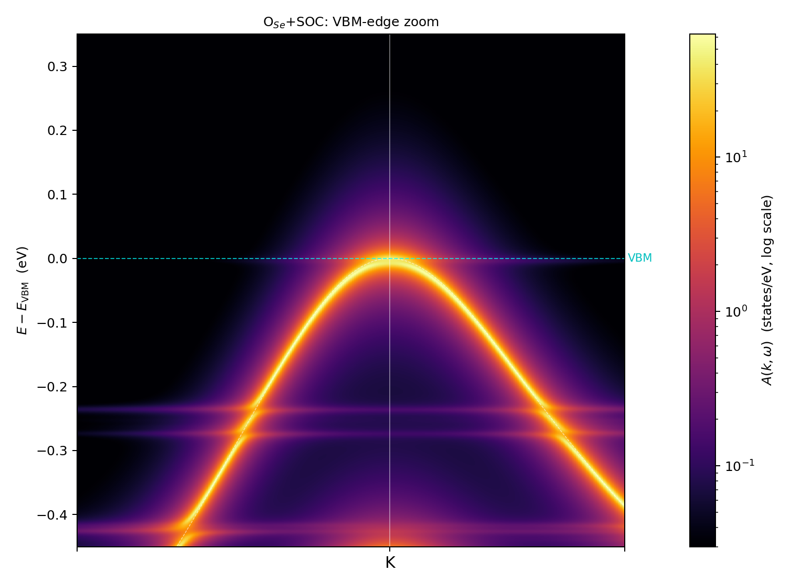
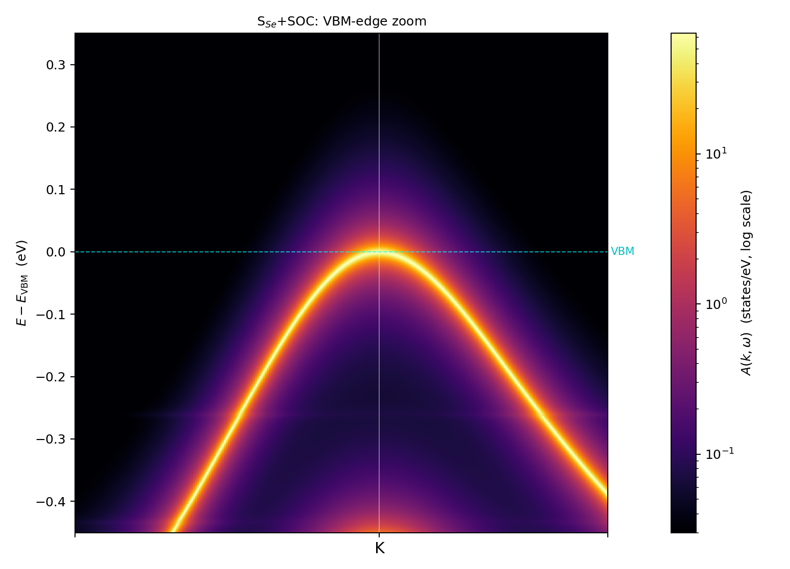
3.4 CBM-edge triptych
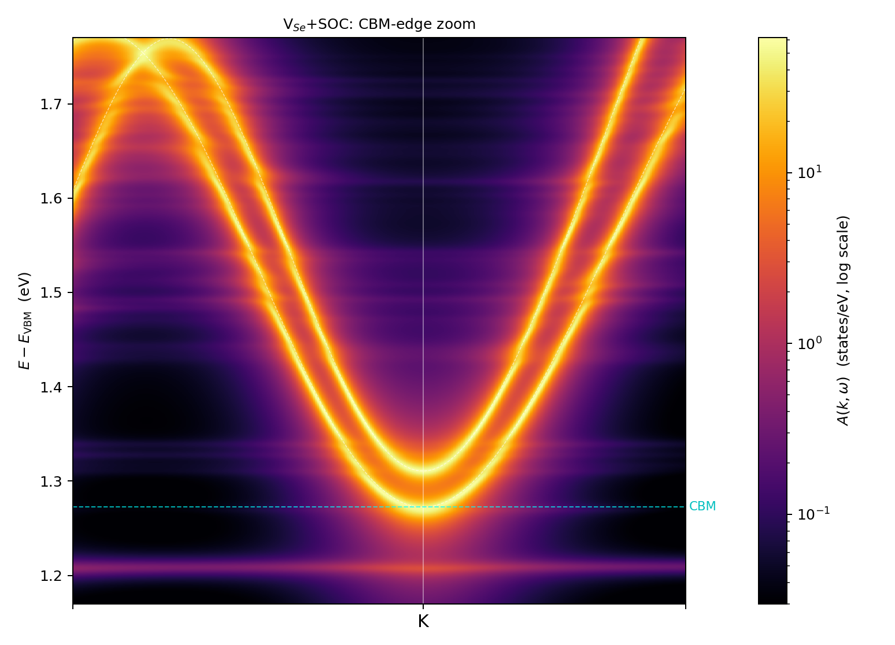
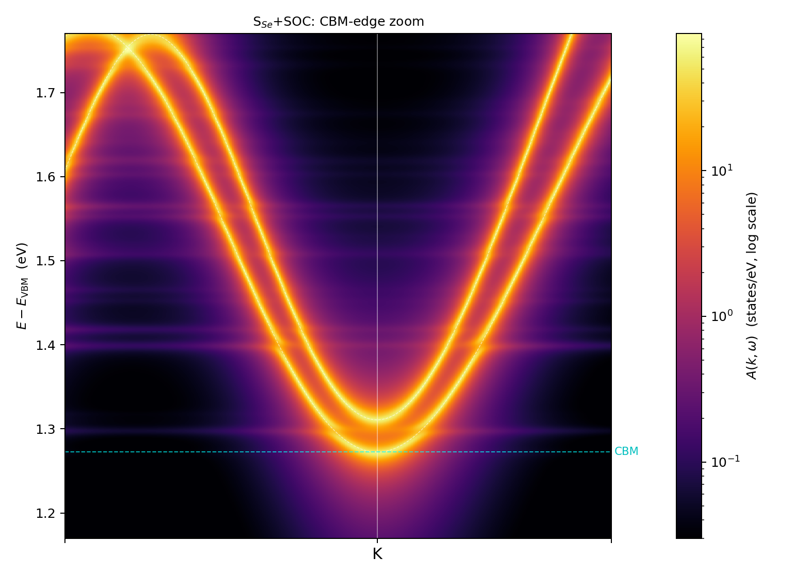
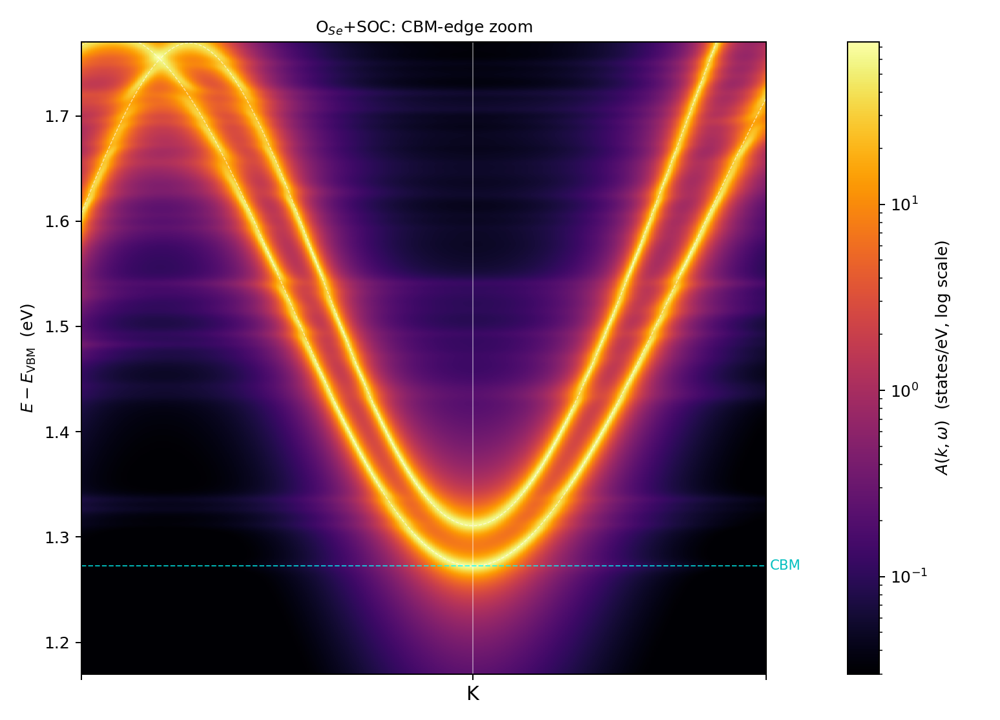
4 · Mobility: locking sets baselines, edge resonances set exceptions
Production tier as established on the SOC mobility page: per-state assembly on the $\eta\to0$ continuum Koster–Slater host, $N_W=192$, IBTE, $g_s{=}1$, $c=1/36$, $n=10^{12}$ cm$^{-2}$; the independent Kubo K1 tier as the cross-gate.
| defect | $\mu_h$ (cm$^2$/Vs) | $\mu_e$ | K1 gate h / e | reading |
|---|---|---|---|---|
| V$_{\rm Se}$ | 69.5 | 175 | 2.1% / 13.8%$^{*}$ | the $a_1$ level pinned at the VBM is a resonant hole scatterer — it defeats the 466 meV locking. Contrast V$_S$@MoS$_2$: $a_1$ at $+0.053$ (off the edge) → $\mu_h=926$. Same defect class, 13× apart, decided by one level's 60 meV placement. |
| O$_{\rm Se}$ | 732 | 276 | 1.0% / 6.3% | moderate on both sides; the in-gap trap pair scatters electrons only through off-shell tails. |
| S$_{\rm Se}$ | 5589$^{\dagger}$ | 167 | 0.7% / 6.5% | h/e asymmetry ×33: locked, resonance-free holes vs a perfect CBM$+3$ meV electron edge resonance. |
$^{*}$V$_{\rm Se}$/e: the largest gate residual — the 75-Ry-limited cell with 62% gap-side spectral weight; quote with that caveat. $^{\dagger}$S$_{\rm Se}$/h drifts $+1$%/rung along the $\eta$ ladder (slight lower bound). All other channels $N_W$-converged to 1–2%; under-resolution audits clean except S$_{\rm Se}$/h (both engines $\eta$-consistent at $\sim$5500–5900).
Cross-material moral (WSe$_2$ has no scalar arm; the comparison is against MoS$_2$+SOC): tripling the valence splitting does not triple hole mobility — defect-level placement relative to the band edges dominates over phase-space topology. Valley locking is the tide; edge resonances are the rocks.
5 · WSe$_2$-specific pitfalls
- W 4f in valence (SG15 FR $z=28$): 14 semicore $f$ states with a 2.2 eV $j$-splitting sit in the band stack; NSCF band counts and the active-window indices must account for them (active = 27–48).
- 75 Ry is a vacancy-friendly but O-hostile basis: V$_{\rm Se}$ levels converge with bands (splitting opens onto truth); compact O orbitals do not — the harder-basis law from the scalar PAW study, re-encountered.
- Gauge provenance across NSCF reruns: the 280-band arm lives in its own outdir; its vertex binaries must never be mixed with the 180-band arm's
u.mat— every Kramers pair carries an arbitrary 2×2 gauge rotation between runs. - kmesh_tol for truncated cells,
index="*"UPF repair, no $\Gamma$-trick for spinors, and the SLURM-grep/pipefail trap — inherited from the campaign log (§1, and the SOC page pitfalls box).